🛠 Установка
1
Заходим на наш сайт и авторизуемся (или регистрируемся).
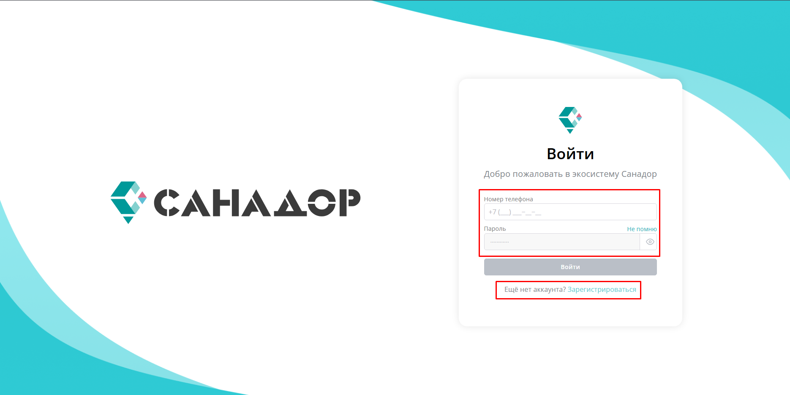
2
После авторизации нажимаем на вкладку «ЭПД» → «Регистрация».
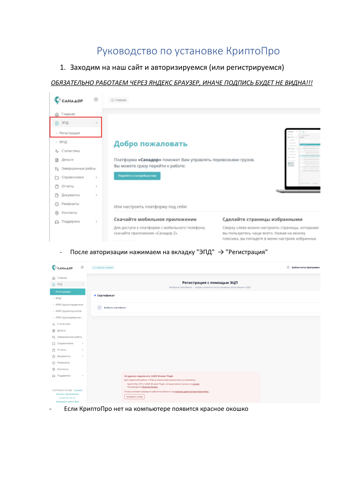
3
Если КриптоПро нет на компьютере — появится красное окошко.
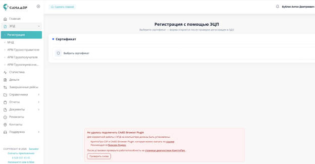
4
Чтобы скачать приложение КриптоПро и плагин для браузера, нужно нажать на «ссылке» на этом окошке (это гиперссылка).
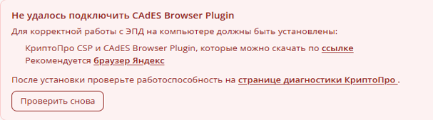
5
В полученном окне необходимо заполнить форму: Ф.И.О, Email, Организация (не обязательно).
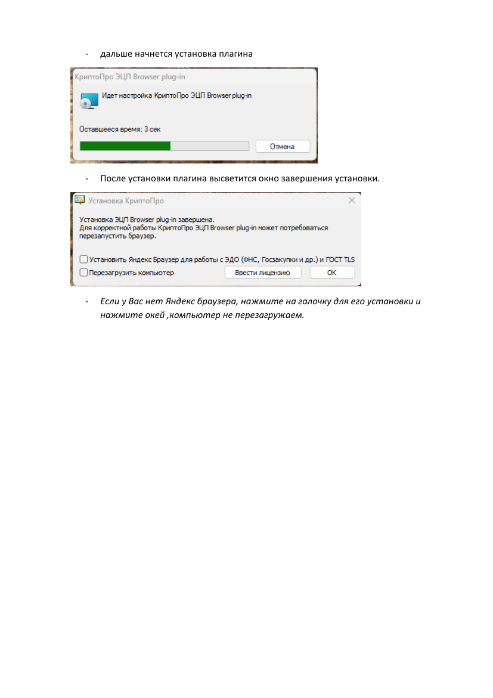
6
После заполнения формы выбираем операционную систему (Windows, macOS, Linux DEB/RPM). Обязательно ставим галочки на согласие об обработке перс. данных и условия лицензионного соглашения. Нажимаем «Скачать».
7
В разделе «Загрузки» (правый угол) появится нужный файл — открываем его.
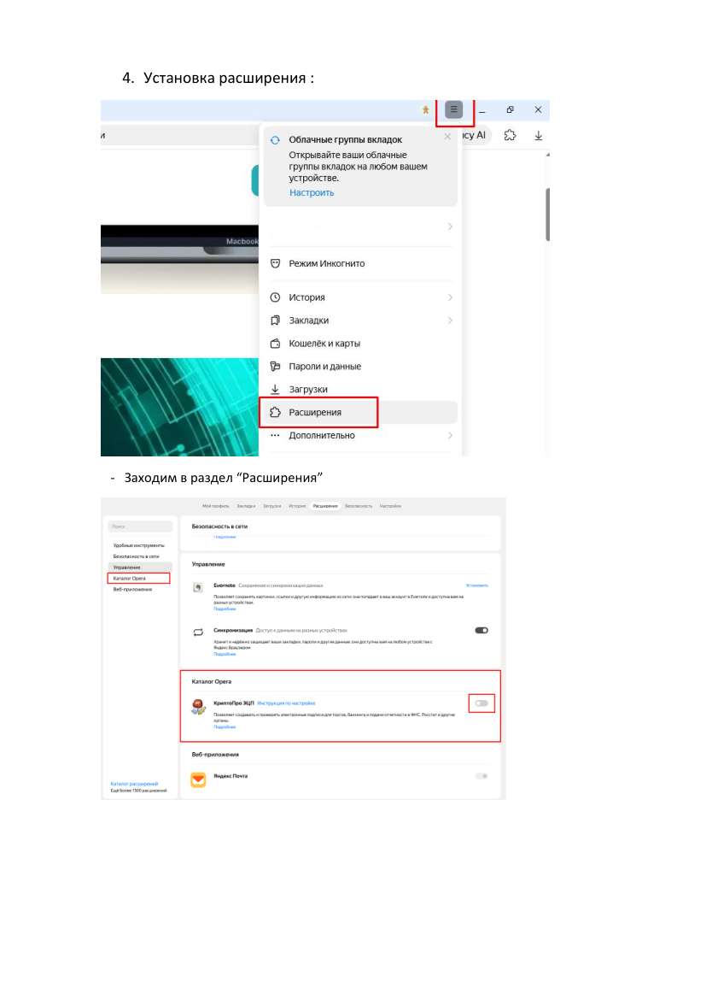
8
Начинаем установку. В момент установки потребуется перемещать указатель мыши для генерации случайной последовательности.
Если КриптоПро уже стоял на компьютере, это окно не появится.
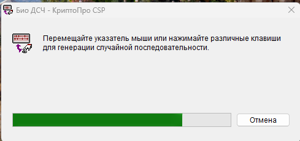
9
Когда полоска генерации полностью заполнится — ждём, пока установка завершится.
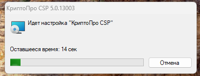
10
Дальше начнётся установка плагина.
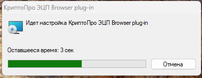
11
После установки плагина высветится окно завершения установки.Если у вас нет Яндекс Браузера — нажмите на галочку для его установки и нажмите «ОК»
Компьютер НЕ перезагружаем!
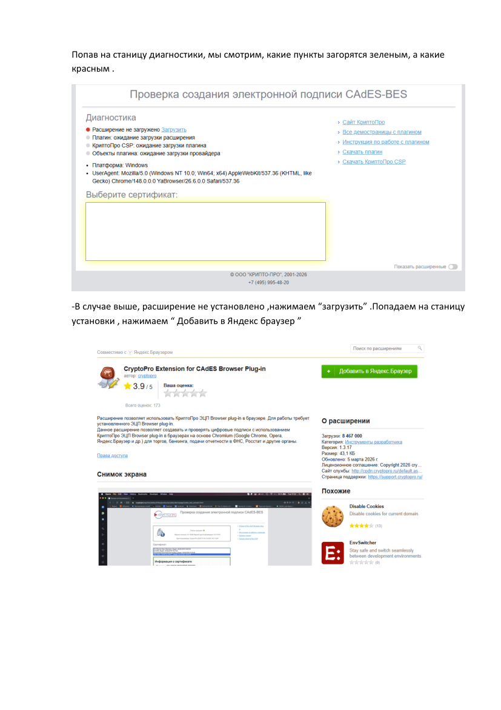
12
Установка расширения. Заходим в раздел «Расширения».
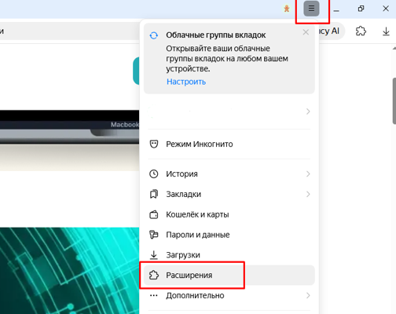
13
Листаем до раздела "Катвлог Opera".
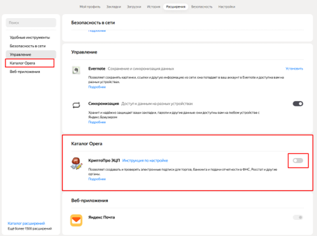
14
Есть 3 состояния у расширения:
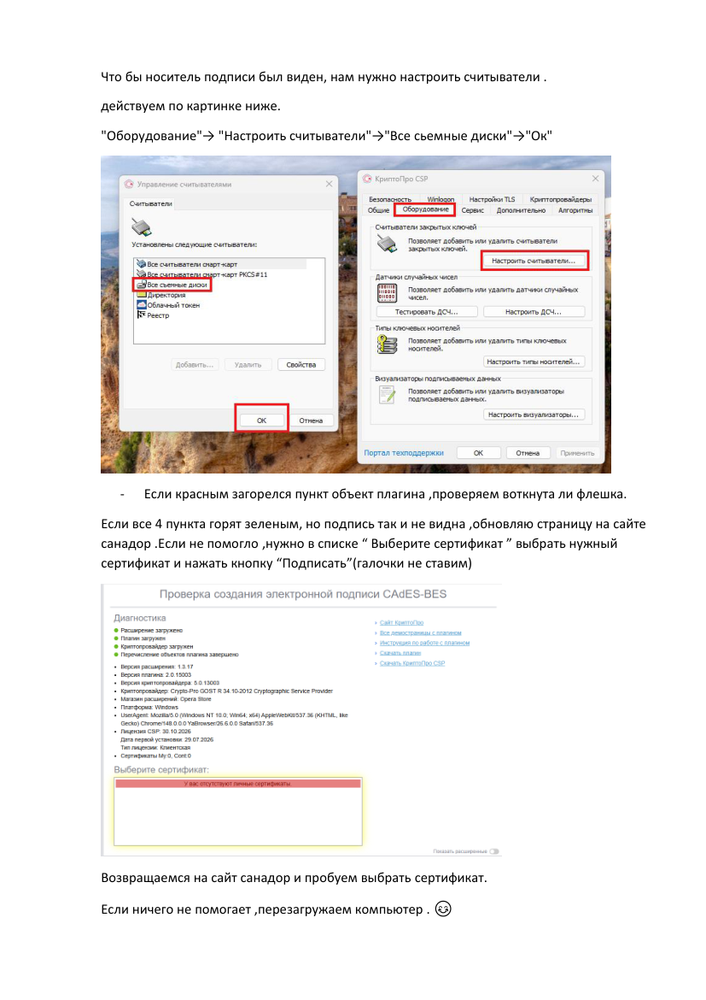

✅ Включено
⛔ Выключено
❌ Не установлено
15
Нажимая «Установить», попадаем на сайт-магазин, жмём «Добавить в Яндекс Браузер».
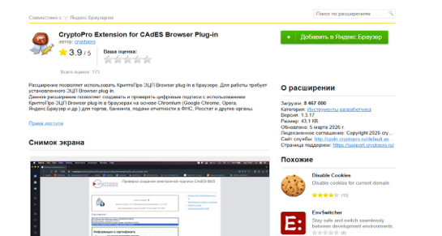
16
Разрешаем.
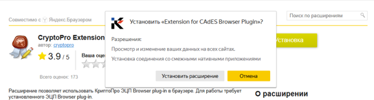
17
Возвращаемся на сайт Санадор и обновляем страницу.
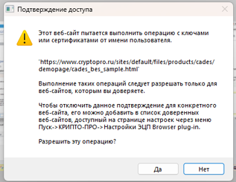
18
Разрешаем.
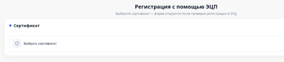
19
Если всё сделано правильно, сертификат будет виден при выборе в разделе «Регистрация ЭПД».
✅ Установка завершена!
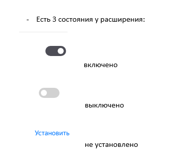